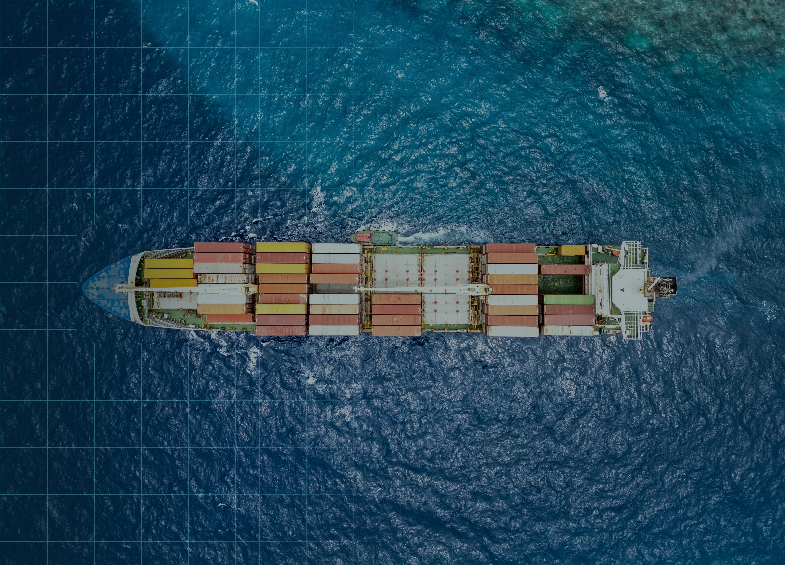

Feature and system responsibility
I take technical responsibility for a complete safety-critical system or for a single feature, from requirements and architecture through implementation to certification and commissioning.

Autonomous systems
Ship automation
I develop safety-critical systems and systems that have to be certified. I work as technical lead with responsibility for the whole system, or I take on individual features of it.
I take technical responsibility for a complete safety-critical system or for a single feature, from requirements and architecture through implementation to certification and commissioning.
I lead international development teams and am trained in leading German-Indian and German-Chinese teams in particular. This covers architecture, development process, CI/CD and quality planning.
I develop editors, configurators and AI-supported workflows tailored to your engineering process. They reduce manual project work and shorten every subsequent delivery.
Four degrees in engineering and business, five languages. I assess the technical and the commercial side of a problem together, and I talk to management and to technical experts on equal terms.
Design and development of alarm, monitoring and control systems (AMCS) with redundant, fail-safe architecture and web-based operation. Integration of PLCs, field devices and ship systems.
Class approval of software and systems with Bureau Veritas, DNV and Lloyd's Register. Cyber security approval in accordance with IACS UR E26/E27 and IEC 62443, mandatory for newbuilds contracted since July 2024.
System architecture for autonomous vessels, vehicles and robots based on ROS. LiDAR and camera perception, localisation and mapping (SLAM) and safe actuator control.
Embedded software in Rust, C and C++ on custom Linux systems built with Yocto. Application software from backend services to web frontends in TypeScript and Svelte.
No-code editors and configurators, AI-supported system integration from customer documentation, automated end-to-end testing and CI/CD.
For software and system projects outside these areas, please get in touch. I will tell you whether I am the right fit.
Developed by meExisting, unchanged
Developed by meExisting, unchanged
Developed by meDeveloped by my colleague
Four degrees M.Sc. and B.Sc. Engineering Management, B.Sc. Electrical Engineering, B.Sc. Business Administration, all at Kiel University.
Five languages German, English, French, Spanish and Portuguese.
Full CV All stations since 2018 are on LinkedIn.
Send me a few lines about your system and what you need. I will tell you honestly whether I am the right fit. I work remotely for clients worldwide and am available part-time.
lasse@boenecke-engineering.de LinkedIn